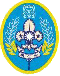
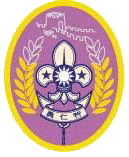
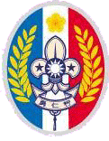

童軍運動創始人為羅勃特.史蒂芬遜.史密夫.貝登堡 (Robert Stephen-son Smyth Baden-Powell)，尊稱貝登堡 (B.-P.)。
波爾戰爭後翌年，1901年， 貝登堡組織創辦山區偵察的『南非警衛隊 (South Africa Constabulary)』，配備制服，乃是後來童軍制服的原形。
這個南非警衛隊的箴言標語是『準備 (BePrepare)』，也是現今世界各地童軍所採用奉行的箴言名句。
1907年，為著實際了解自己的理論而進行一項歷史性露營實驗訓練。
二十餘名不同社會背景，年齡在十一歲至十六歲之間的青少年兒童，在英國南部白浪島參加露營活動訓練。
他使用小隊制度，把孩子們分小組教導他們露營；斥候；急救；結繩；先鋒工程；游泳狩獵；野外生火；炊事和傳訊等知識技能。
露營實驗結果，獲得空前成功。貝登堡把該次露營的經驗作為藍圖編寫成書。
便是上述著名的《童子警探》。就是後來的童軍手冊。
1908年，《童子警探》這本童軍手冊，已經被翻譯成五種文字，足以深刻地證明，童軍運動經已深受各國重視及歡迎，後成為國際性偉大的青少年運動。
除了基本的初中高級之外，最特別的是以下三種進程章:
| 獅級 |  |
|---|---|
| 長城 |  |
| 國花 |  |
中華民國童軍諾言：
憑我的榮譽，我願盡力遵守童軍規律，終身奉行下列三事：
第一：敬天樂群，做一個堂堂正正的好國民。
第二：隨時隨地扶助他人，服務社會。
第三：力求自己智識、品德、體格之健全。
中華民國童軍規律：
一、誠實 為人之道，首在誠實，無論做事、說話、居心，均須真實不欺。
二、忠孝 對國家須盡忠，對父母應盡孝。
三，助人盡己之力，扶助他人，每日至少行一善事，不受酬，不居功。
>四，仁愛待朋友須親愛，待眾人須和善，對生命要尊重，對社會要關心，對大自然要維護。
五，禮節對人須有禮貌，凡應對進退，均應合乎規矩。
六，公平明事理，辨是非，待人公正，處事和平。
七，負責信守承諾，克盡職責，遵守團體紀律，服從國家法令。
八，快樂心常愉快，時露笑容，無論遇何困難，均應處之泰然。
九，勤儉好學力行，刻苦耐勞，不浪費時間，不妄用金錢。
十一，整潔身體，服裝，住所，用具須整齊清潔，言語須謹慎，心地須光明。
十二，公德愛惜公物，重視環保，勿因個人便利，妨害公眾。
中華民國童軍銘言：
一，準備。
二，日行一善。
三，人生以服務為目的。